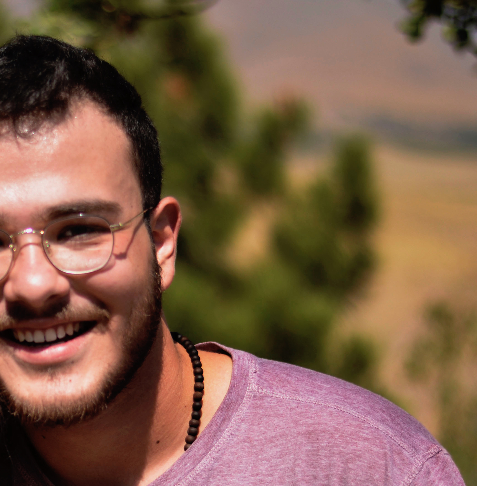

About Me
- Mohammadamin Karbasforushan (Amin Karbas)
- Data infrastructure engineer, software engineer
- Computer science student, internet measurements research intern
- Passionate about mountain biking and dancing
What I'm Doing
What I've Done
- (2020) Conference Attendance: ACM IMC 2020
- (2020) Attendance: CT Days 2020 (on Certificate Transparency)
- (2017) Data Engineering intern at Sahab Pardaz
-
(2016) Ranked 399th among more than 162,000 participants in Iran's national university entrance
exam for bachelor's candidates in Maths and Physics
Curriculum Vitae
- k.mohammadamin[AT]gmail.com
Find Me Elsewhere